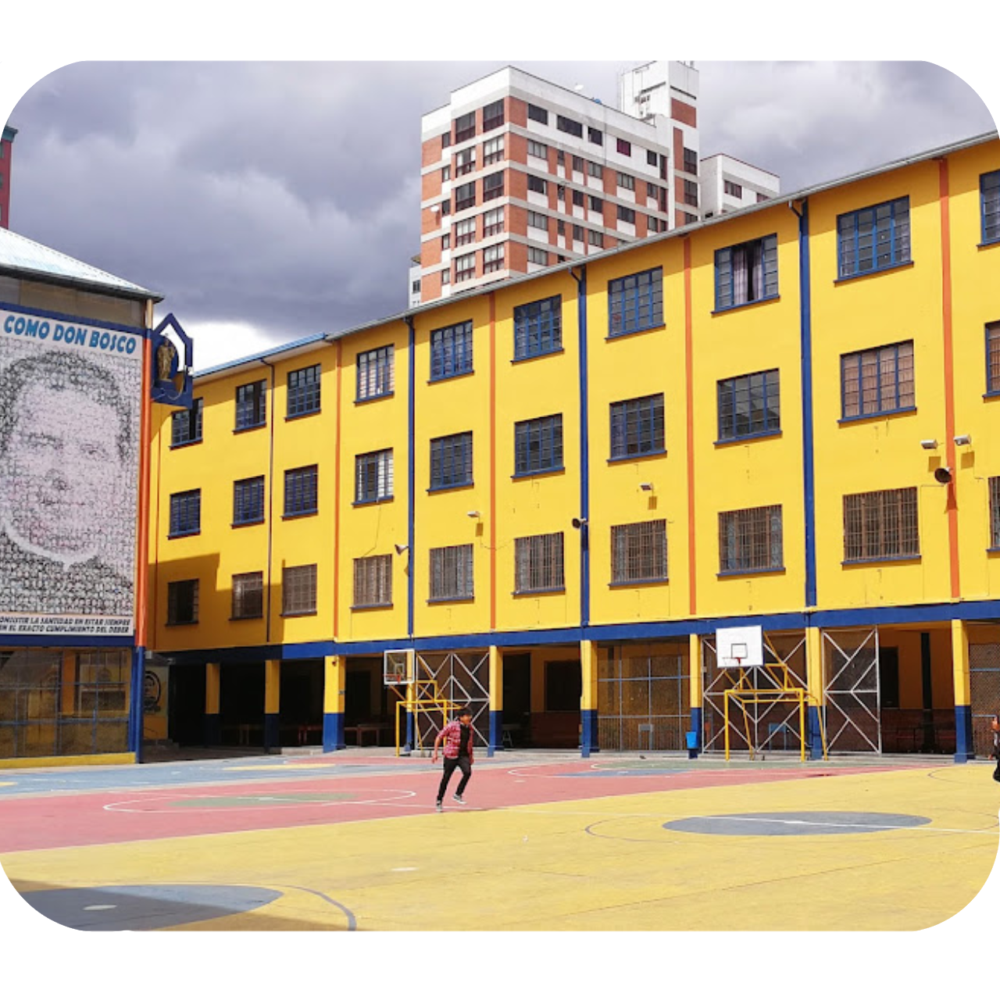

|  | Cumplimos 120 años de historia y hoy por hoy te acompañamos Virtualmente junto a la Comunidad Salesiana Don Bosco el Prado desde 1896 |
|---|---|
| Oratorio: casa que acoge, escuela que educa para la vida, parroquia que evangeliza y patio donde nos conocemos y somos amigos, cumplimos 125 años cuando los salesianos llegaron a La Paz -Bolivia |
|
| |
Reencontrandonos en el Patio Virtual Valdocco, para disfrutar al lado de la juventud, un espacio virtual pensado en la niñez y juventud de toda la Obra, acompañanos. |